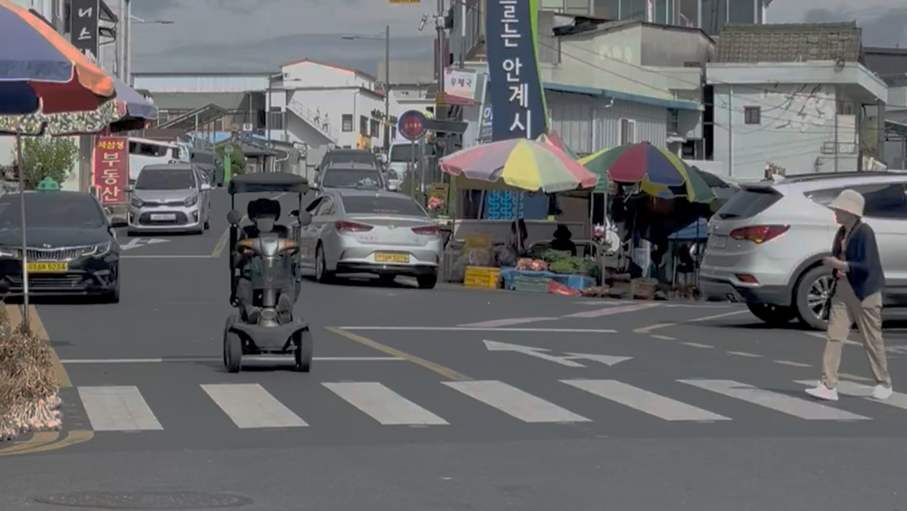
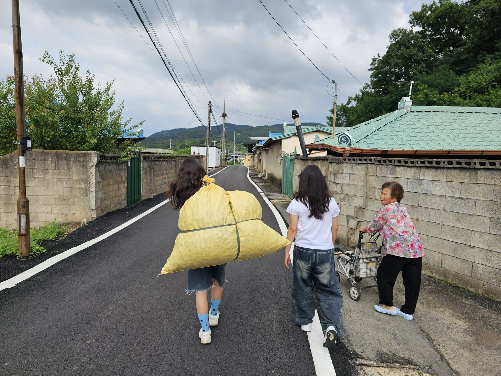
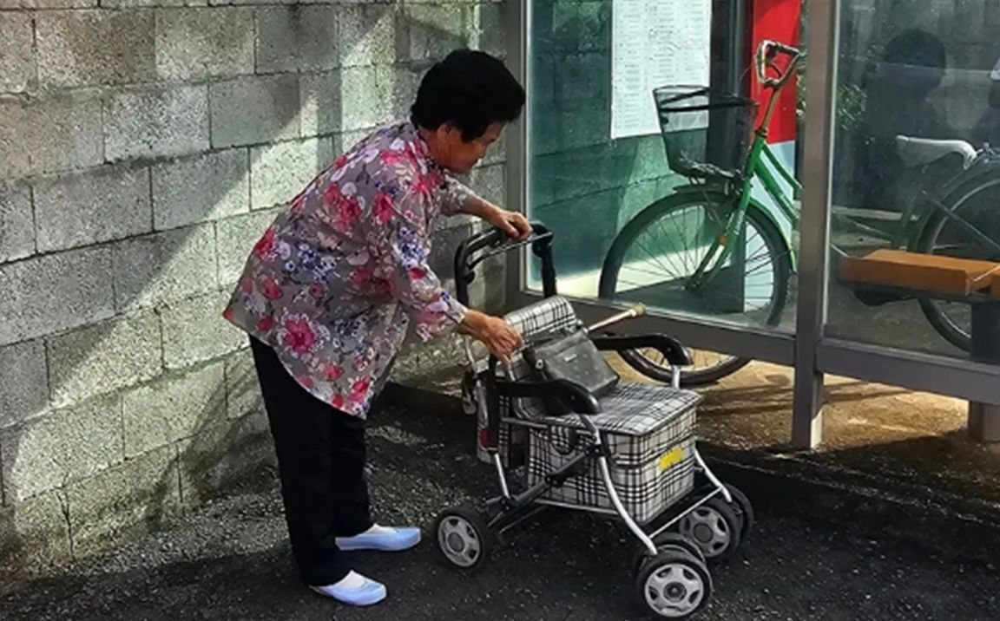
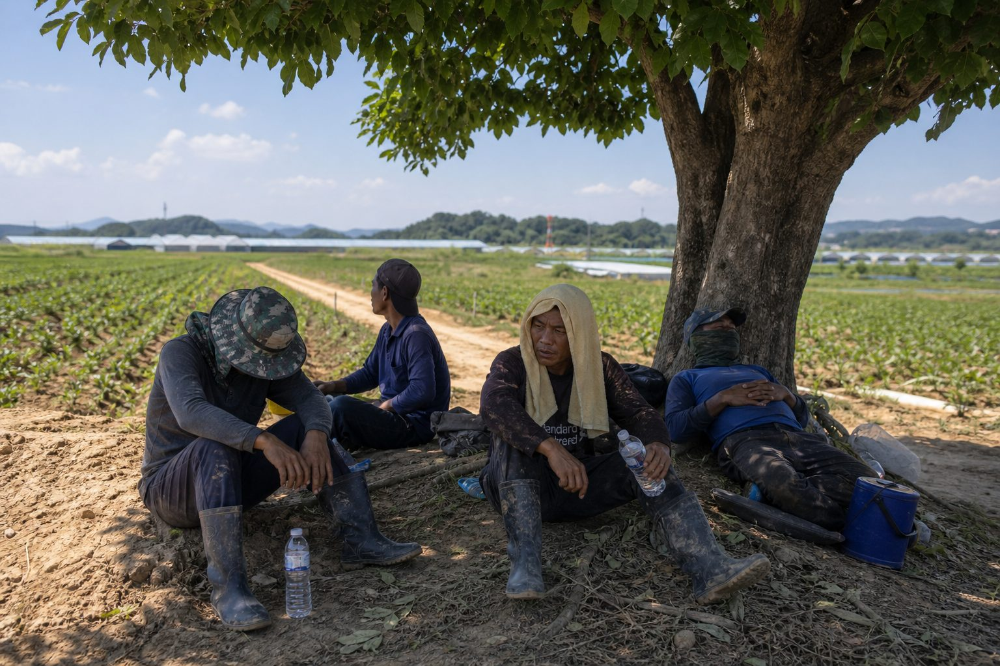

2025년 여름, 대학생 12명이 경북 의성에 머물며 지역 문제를 찾아 정의했습니다. 어르신의 전동스쿠터 사고, 버스에 싣지 못하는 실버카, 그늘 없는 밭의 온열질환처럼 주민들이 겪으면서도 알려지지 않았던 문제입니다.
Sunny On-Site는 SK행복나눔재단의 대학생 사회문제 해결 브랜드 Sunny가 운영하는 현장기반 연구 프로그램입니다. 대학생이 지역에 직접 머물며 주민의 이야기를 듣고 일상을 관찰해, 그곳에 살아야 보이는 문제를 찾아 정의합니다.
1기는 2025년 「Sunny Scholar in 의성」이라는 이름으로 경북 의성군에서 진행했습니다. 대학생 12명이 6월 26일 오리엔테이션을 시작으로 2개월 동안 의성에 머물며 노인복지관과 마을회관, 공판장을 정기적으로 찾았습니다. 이후 3개월 동안은 팀마다 정한 솔루션을 구체화했습니다.
Sunny On-Site 공식 소개 보기 ↗문을 열고 나가면 곧바로 현장을 마주할 수 있는 프로그램
SK행복나눔재단 담당 매니저 (더나은미래, 2025년 7월 9일)팀마다 누가 어떤 피해를 겪는지 현장에서 확인하고, 그 피해가 왜 생기는지 원인을 찾았습니다.



팀을 꾸리고 현장 연구를 준비합니다.
지역을 미리 공부하고 문제정의를 연습합니다.
지역에 머물며 주민을 인터뷰하고 일상을 관찰합니다.
정의한 문제가 맞는지 현장 데이터를 분석해 검증합니다.
결과를 보고서로 정리해 사회 섹터와 지역 기관에 공유합니다.